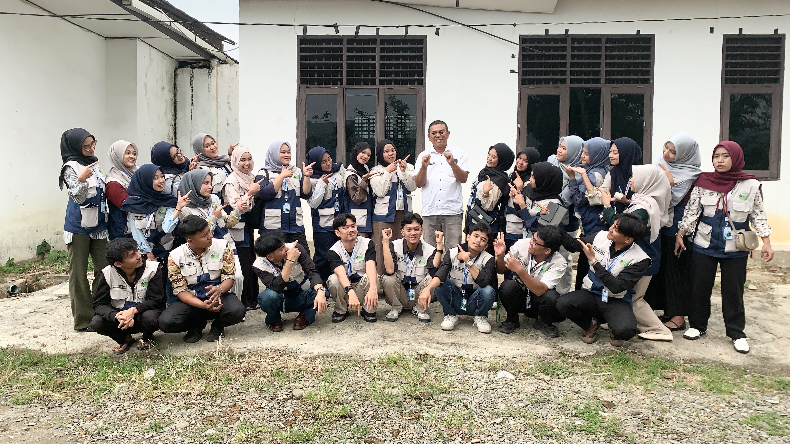
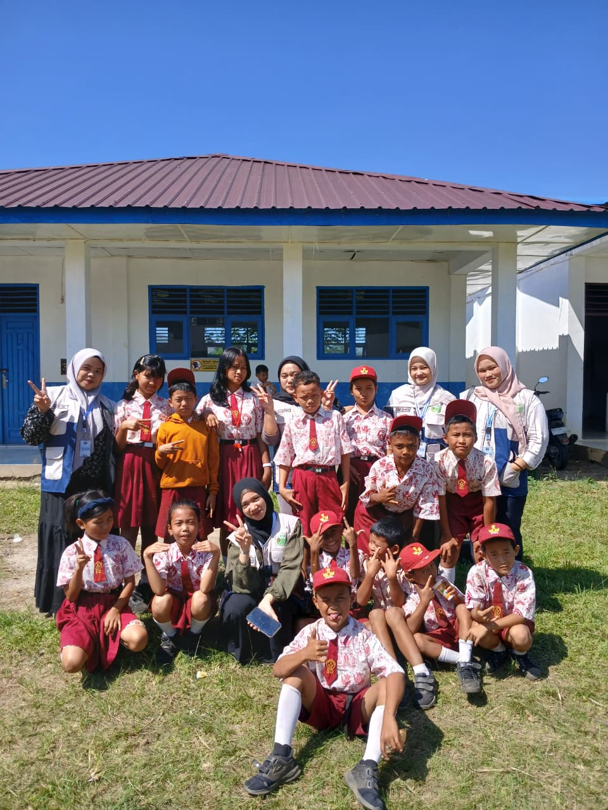
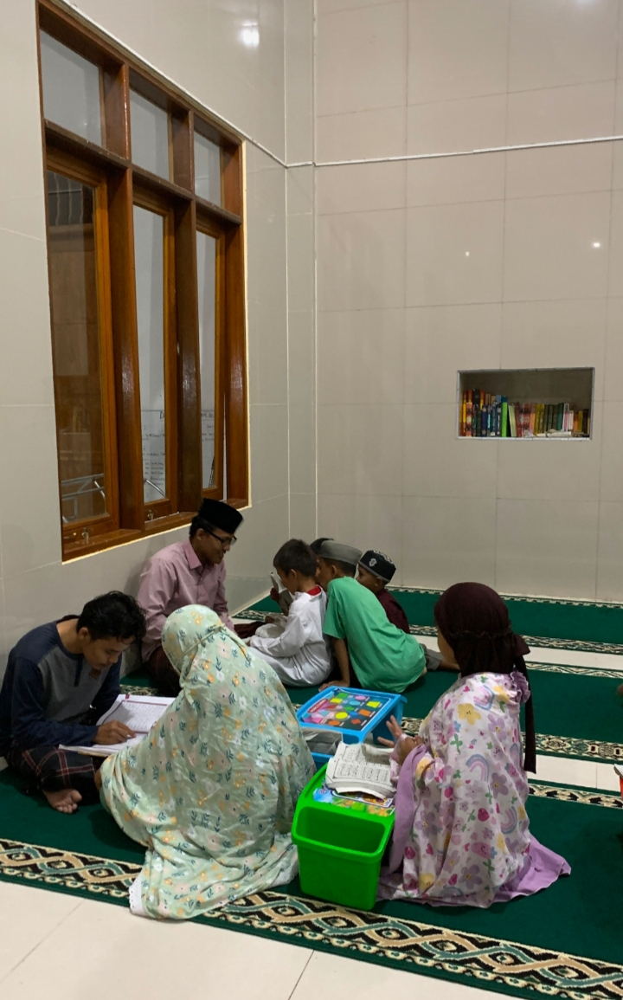
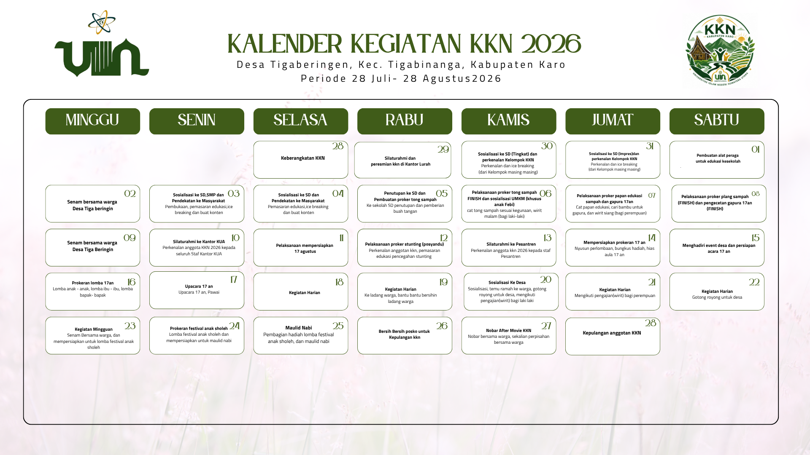
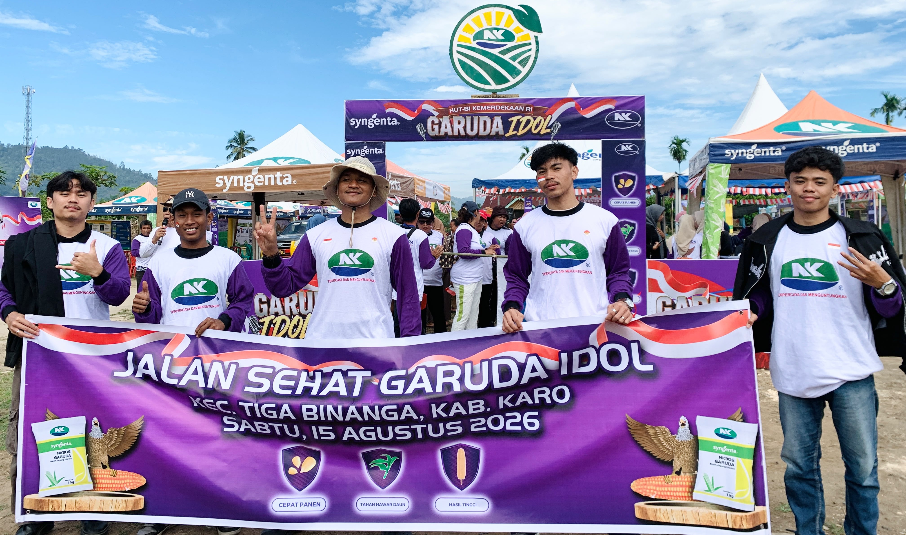
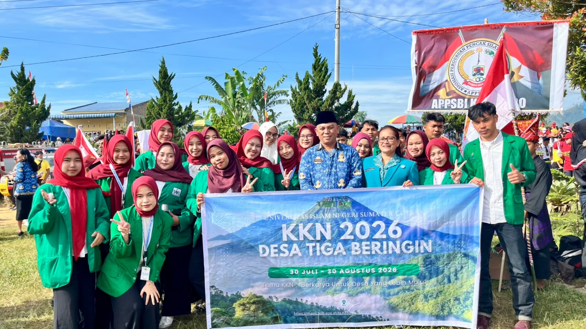
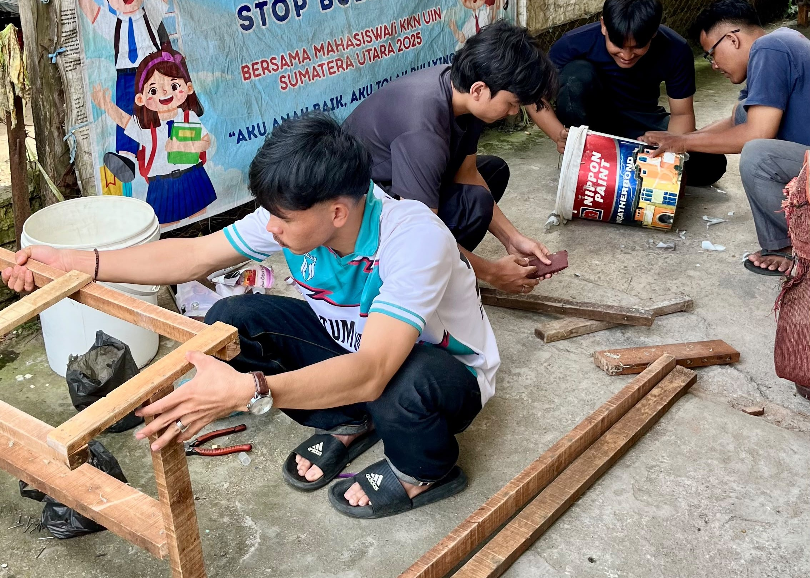

Profil Desa
Karakter lokasi, konteks sosial, dan kebutuhan utama yang menjadi dasar perencanaan kegiatan.
KKN 2026 • Desa Tiga Beringin
Kami hadir di tengah kehidupan desa untuk belajar, bersinergi, dan menyiapkan program yang konkret. Dokumentasi ini menampilkan proses, kolaborasi, dan hasil kerja mahasiswa KKN selama mengabdi di daerah Tiga Binanga.

Tentang lokasi
Desa Tiga Beringin merupakan desa yang memiliki karakter agraris, kental dengan budaya gotong royong, serta kondisi lingkungan yang mendukung tumbuhnya kegiatan sosial dan edukasi. Keberadaan masyarakat yang terbuka terhadap inovasi membuat proses pengabdian berjalan dengan semangat belajar dan kolaborasi.
Di tengah aktivitas harian warga, kami berupaya hadir sebagai mitra yang membantu menguatkan literasi, menyusun program kerja yang relevan, serta menjaga hubungan baik dengan aparat desa, tokoh masyarakat, dan generasi muda.


Dokumentasi lengkap

Karakter lokasi, konteks sosial, dan kebutuhan utama yang menjadi dasar perencanaan kegiatan.
Rangkaian kegiatan yang disusun berdasarkan kebutuhan masyarakat, mitra, dan potensi desa.
Sinergi dengan aparat desa, guru, tokoh masyarakat, serta kelompok pemuda dalam pelaksanaan program.
Foto, evaluasi, dan pengalaman nyata yang menggambarkan perjalanan kegiatan KKN selama masa pengabdian.
Program kerja

Memberikan pemahaman mengenai pengelolaan lahan, teknologi sederhana, dan pelibatan masyarakat dalam kegiatan produktif.

Mendukung literasi, belajar mandiri, dan interaksi positif dengan siswa dan generasi muda di lingkungan desa.

Membuat tong sampah dari bahan bekas untuk mendukung kebersihan lingkungan dan edukasi pengelolaan sampah.
Alur kerja
Memahami kondisi desa, kebutuhan masyarakat, dan potensi program yang sesuai.
Menyusun sasaran kerja, pembagian tugas, dan pendekatan kolaboratif dengan mitra.
Menjalankan kegiatan lapangan dengan pendekatan yang responsif terhadap kebutuhan masyarakat.
Menilai dampak kegiatan, memperbaiki langkah, dan menyusun dokumen pembelajaran.
Galeri
28 Juli - 28 Agustus 2026 · Klik foto untuk melihat lebih
Catatan penting
Tim KKN berkolaborasi dengan aparat desa, sekolah, tokoh masyarakat, dan kaum muda untuk memastikan program berlangsung sesuai kebutuhan lokal.
Fokusnya tidak hanya pada satu bidang, tetapi pada edukasi, sosial, dan penguatan hubungan komunitas agar manfaatnya bersifat menyeluruh.
Dokumentasi bersumber dari kegiatan nyata, foto lapangan, dan pengalaman tim selama menjalani proses pengabdian di Desa Tiga Beringin.
Hubungi